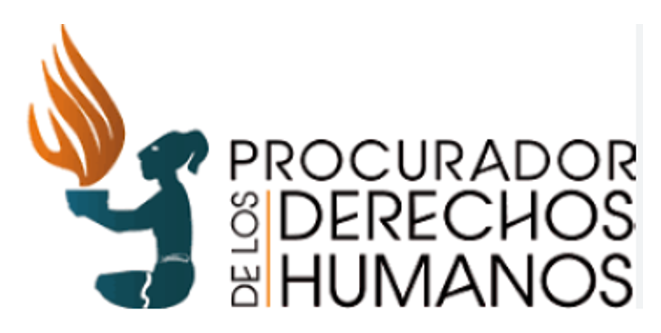
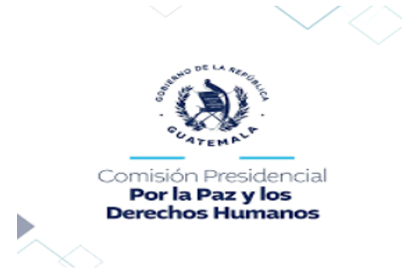
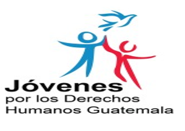
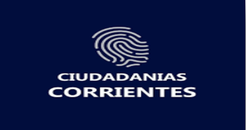

Proyecto de Ciencias Sociales
Instituciones que protegen los Derechos Humanos
Los derechos humanos no siempre son respetados en la sociedad, por ello se han creado instituciones y organizaciones para que garanticen la defensa y protección de estos por medio de la educación, promoción y vigilancia para exigir que se cumplan.
En Guatemala, algunas de las instituciones son estatus y están contempladas en las leyes del país. También cuentas con asignación presupuestaria y tiene diferentes tareas asignadas en esta materia .Existen también otras instituciones que han sido organizadas por los ciudadanos con el fin de apoyar el trabajo que realiza EL Estado en la garantía del cumplimiento de los derechos de las personas. Cada una se especializa en un área específica donde los derechos humanos de la población se encuentren en situación de mayor vulnerabilidad.
Instituciones estatales en Guatemala
Procuraduría de los Derechos Humanos (PDH):
La Procuraduría de los Derechos Humanos (PDH) en Guatemala es una institución estatal independiente encargada de promover y proteger los derechos humanos de todas las personas en el país. Su principal función es velar por el cumplimiento de la Constitución y los tratados internacionales de derechos humanos, investigando y denunciando violaciones a estos derechos, así como emitiendo recomendaciones a las autoridades para que tomen medidas correctivas.
Funciones principales de la PDH:
• Investigación de violaciones a los derechos humanos
• Promoción y educación en derechos humanos
• Emisión de recomendaciones
• Defensa y protección de los derechos humanos

Comisión Presidencial por la Paz y los Derechos Humanos (Copadeh):
Tiene como fin unificar los esfuerzos para fortalecer la paz, promover y vigilar el respeto a los derechos humanos e impulsar el desarrollo de la población Guatemalteca en la sociedad

Instituciones no estatales por los derechos humanos
Centro para la Acción Legal en Derechos Humanos
El Centro para la Acción Legal en Derechos Humanos (CALDH) es una organización no gubernamental guatemalteca que se dedica a la defensa y promoción de los derechos humanos, especialmente en el contexto de la justicia y la reconciliación en Guatemala. CALDH investiga y denuncia violaciones de derechos humanos, ofrece asesoramiento legal a víctimas y trabaja para fortalecer organizaciones locales y grupos de víctimas, especialmente mujeres.
Jóvenes por los Derechos Humanos:
Estos derechos comprenden el derecho a la educación, el empleo, la salud, la vivienda y la libertad de expresión, así como la protección de los derechos sociales y culturales, entre ellos aprender y hablar sus idiomas tradicionales
Ciudadanía y Corrientes
La ciudadanía se refiere al estatus legal que reconoce a una persona como miembro de un estado, con derechos y deberes asociados. En el contexto de las corrientes socio-políticas, se analiza cómo diferentes perspectivas influyen en la comprensión y práctica de la ciudadanía, como el liberalismo, comunitario, republicanismo y el modelo libertario.
Corrientes de pensamiento sobre la ciudadanía
Modelo liberal
Enfatiza la libertad individual y los derechos civiles, como la propiedad y la libre expresión.
Modelo comunitarista
Destaca la importancia de la comunidad y los lazos sociales en la formación de la identidad ciudadana.
Modelo republicano
Se centra en la participación activa de los ciudadanos en la vida política y en el bien común.
Modelo libertario
Prioriza la libertad individual y la mínima intervención del estado en la vida de las personas.
La ciudadanía no solo implica derechos, sino también deberes y responsabilidades hacia la comunidad y el estado. La participación activa en la vida política y social es un aspecto fundamental de la ciudadanía moderna, así como el respeto a las leyes y normas establecidas.
Nacionalidad y Ciudadanía
La nacionalidad es el vínculo legal entre una persona y un estado, mientras que la ciudadanía implica derechos y deberes políticos dentro de ese estado. En Guatemala, la nacionalidad se adquiere al nacer en territorio guatemalteco, por filiación de padres guatemaltecos, o por naturalización, y es un requisito para ser ciudadano. La ciudadanía se adquiere a los 18 años y otorga derechos y obligaciones políticas.
Nacionalidad y Ciudadanía
En resumen:
La nacionalidad es el vínculo que te conecta a un país, mientras que la
ciudadanía te da derechos y responsabilidades políticas dentro de ese país. En Guatemala, la
nacionalidad es un requisito para ser ciudadano.
Globalización
La globalización es un proceso complejo que implica la creciente interconexión e interdependencia de países y culturas a nivel mundial, impulsado por factores económicos, tecnológicos, sociales y culturales. Se manifiesta en la integración de mercados, la difusión de tecnologías, la movilidad de personas y el intercambio cultural.
Características de la Globalización
Sistema de comunicaciones global
Un sistema de comunicación global se refiere a la infraestructura tecnológica y los medios que permiten la transmisión de información a escala mundial. Esto incluye desde redes físicas como cables y satélites, hasta plataformas digitales como internet y redes sociales, facilitando el intercambio de mensajes, imágenes y datos entre personas y organizaciones de diferentes partes del mundo.